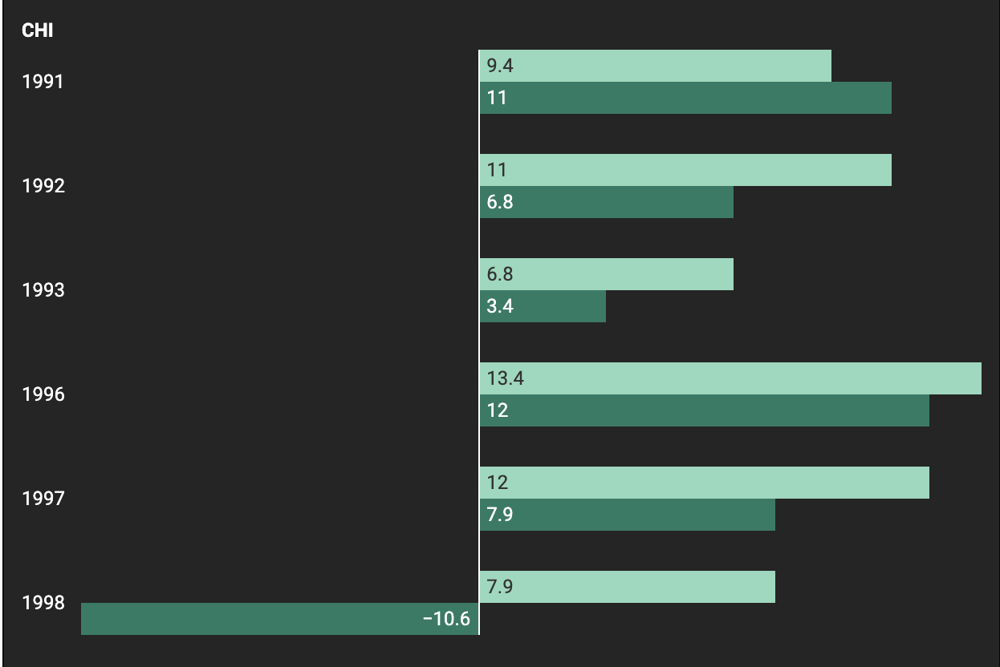
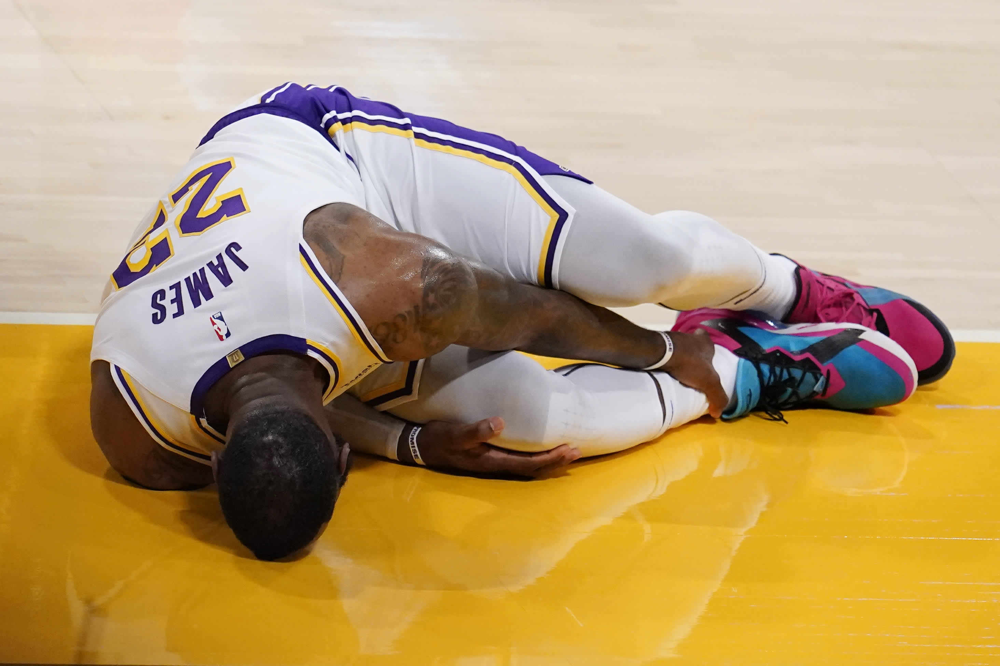

1998-99 Chicago Bulls
During the 1998 offseason, the Bulls experienced significant personnel and coaching changes. The main one was star player Michael Jordan announcing his retirement from basketball. Jordan was considered to be the greatest player of all time up to that point. He had won six championships with the Bulls and was named the NBA's 'Most Valuable Player' five times. During the same month the Bulls second best player, Scottie Pippen, was traded to the Houston Rockets. Pippen was seen as the team's defensive anchor. The team's third best player and starting center, Dennis Rodman, also left the team as his contract had run out and signed with the Los Angeles Lakers. Rodman was one of the best rebounders in the NBA, having lead the league in total rebounds for seven seasons. The Bulls also lost Phil Jackson, their head coach. Jackson was the head coach for all six championships won with Jordan. As a result of losing their best three players and their head coach, the Bulls were unable to come close to replicating the success they had experienced in prior seasons.
This bar chart shows how net-rating during the seasons the bulls won the finals (dark green) and their net-rating the following year (light green). In most instances, their net-rating remained stable and was at least very positive (league average is usually around 0 to 1). However, after the 1997-1998 season the team experienced a net 28.5 decline in net rating. This means that their defense was letting up significantly more points than their offense could score.
2020-21 Los Angeles Lakers
The 2021 were faced with a unique set of circumstances. The finals run they experienced in the previous season was delayed for months by COVID-19. This means that they ended much later than usual. As a result, they only had a 72 day-long offseason, the shortest in NBA history. The short turnaround significantly hampered their ability to recover from the previous season.
This showed as star players Lebron James and Anthony Davis both missed over 25 games. The team experienced the 4th greatest drop in winning perecentage among all the teams we analyzed. The Lakers still made the playoffs in 2021, but were eliminated in the first round.